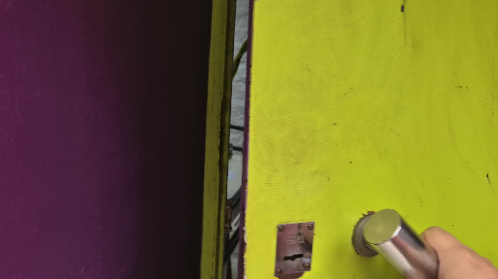
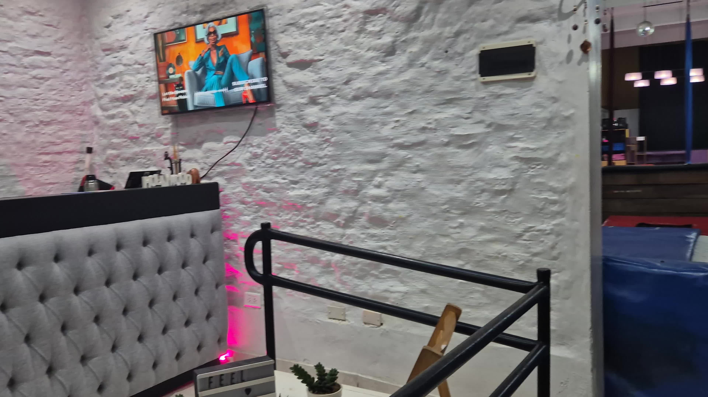
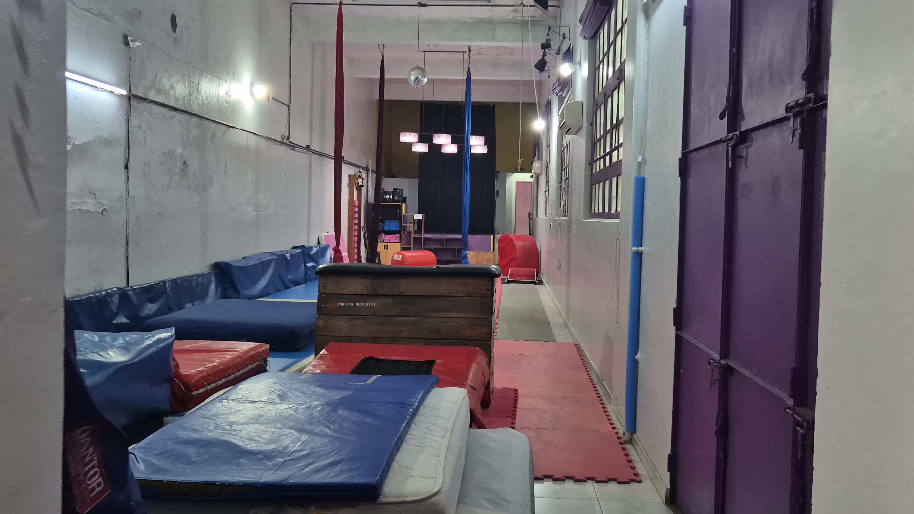
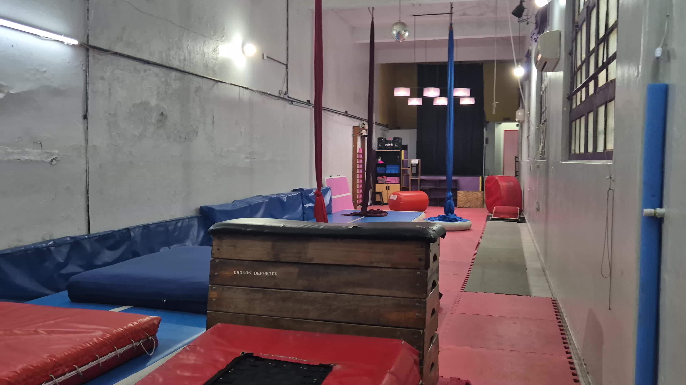
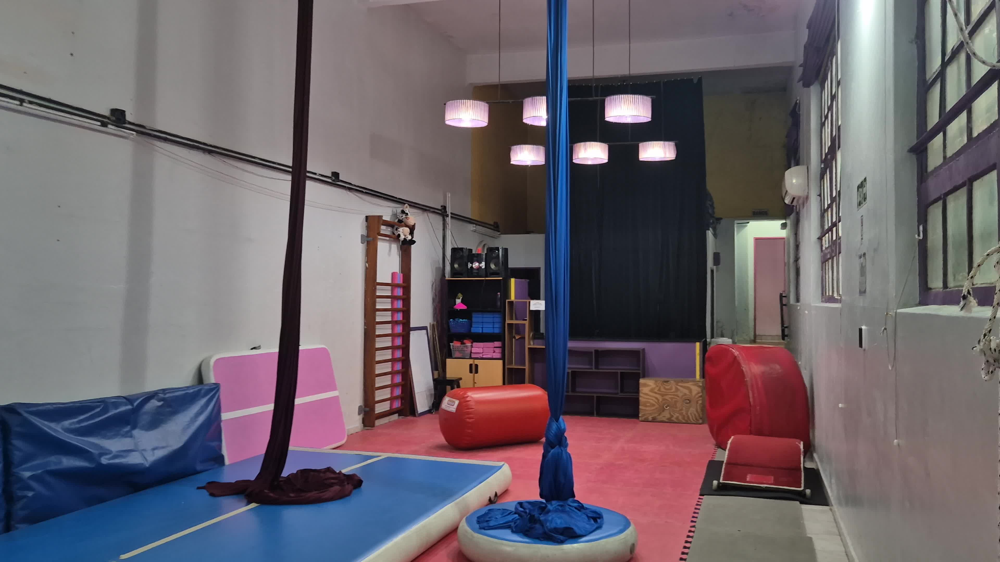
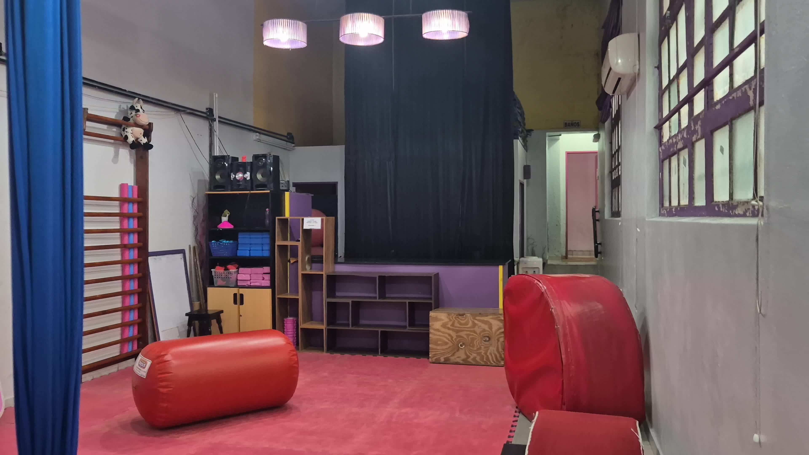
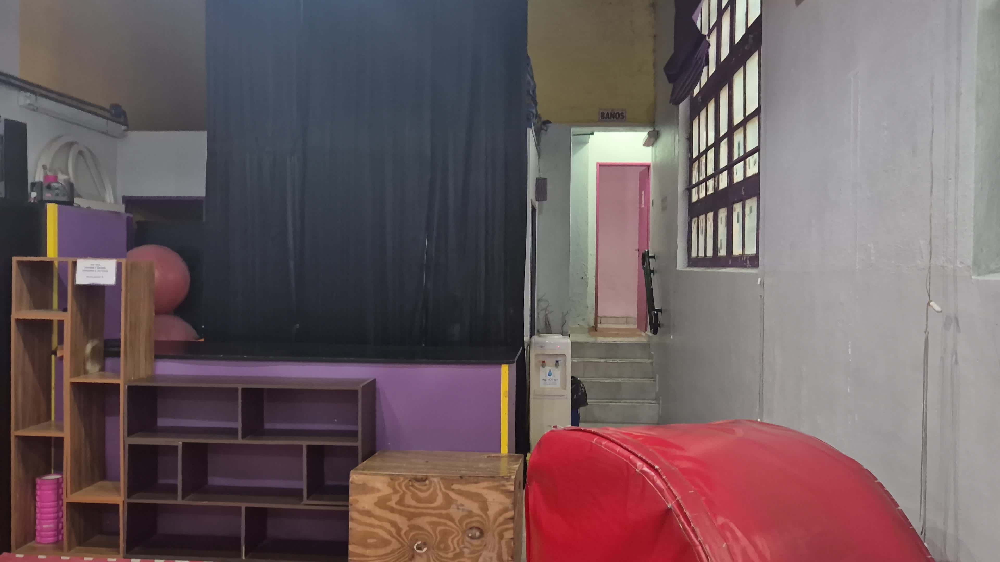
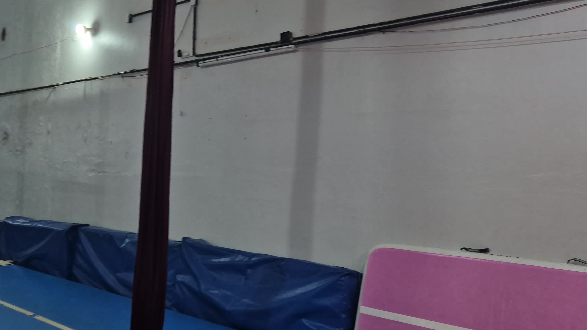
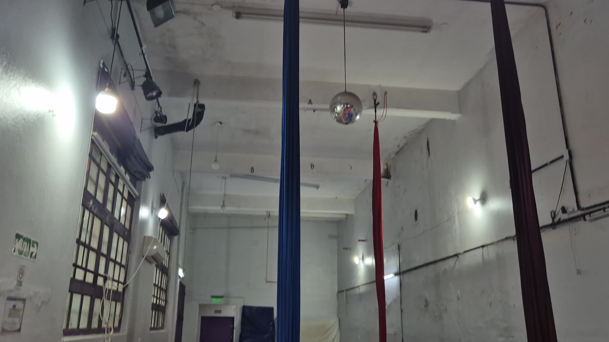

Puerta de ingreso desde la calle
Acceso exterior, apertura de puerta y primeros pasos hacia el interior.

Recepción y Mini-Buffet
Sillón, mesas de apoyo, mostrador de recepción y espacio cálido de bienvenida.

Paso de transición a la sala
Pasillo y rampa con baranda que conecta la recepción hacia el desnivel de entrenamiento.

Pared lateral violeta con logo/arte
Color de marca en pared lateral, espejo y primer contacto con las colchonetas azules.

Perspectiva longitudinal de la sala
La sala alargada en profundidad: colchonetas apiladas, tatami y estructura de vigas en techo.

Zona central: Telas y altura
Anclajes de telas aéreas colgadas del techo y área de amortiguación en el piso.

Profundidad y contención del espacio
La proporción íntima que mantiene la atención enfocada, sin dispersión de gimnasios masivos.

Hacia la cocinita de profes
Llegada al sector posterior de la sala, paso hacia el área técnica y de descanso de profesores.

Cocinita & Dispenser de agua
El dispenser frío/caliente, mesada y espacio de hidratación y mate de los profes.

Sector baños y vestidores al fondo
El remate del recorrido al final de la planta: puertas de baños, cambiadores y privacidad.